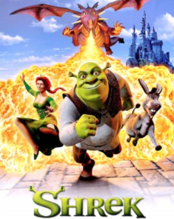
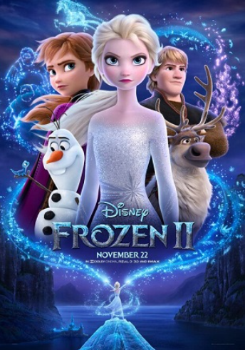

Shrek

A princesa e o ogro vivem felizes no pântano após o casamento. Retornando da lua de mel, ela recebe a carta de seus pais, que a convida para o jantar. O ogro é convencido pela princesa a visitar os pais dela junto com o burro. Quando os pais da princesa descobrem que ela não havia se casado com o Príncipe Encantado, os problemas começam, e o Gato de Botas é enviado a fim de separá-los.
Frozen 2

Seis anos depois do eventos do primeiro filme, a rainha Elsa, sua irmã Anna, Kristoff e Olaf e a rena Sven embarcam em uma nova jornada nas profundezas da floresta, além de sua terra natal, Arendelle, para descobrir a verdade sobre um antigo mistério de seu reino.
Homem Aranha: Um novo dia

Homem-Aranha: Um Novo Dia acompanha Peter Parker em uma nova fase de sua vida, tentando equilibrar suas responsabilidades como herói com os desafios de recomeçar. Enquanto uma nova ameaça surge em Nova York, Peter precisa enfrentar inimigos perigosos e tomar decisões que podem mudar seu futuro como Homem-Aranha.
The Croods

Em plena pré-história, os Croods vivem escondidos em uma caverna, liderados pelo medroso Grug. Tudo muda quando Eep sai à noite e conhece Guy, um jovem nômade que apresenta à família um mundo novo. Juntos, eles enfrentam desafios e precisam se adaptar às mudanças.